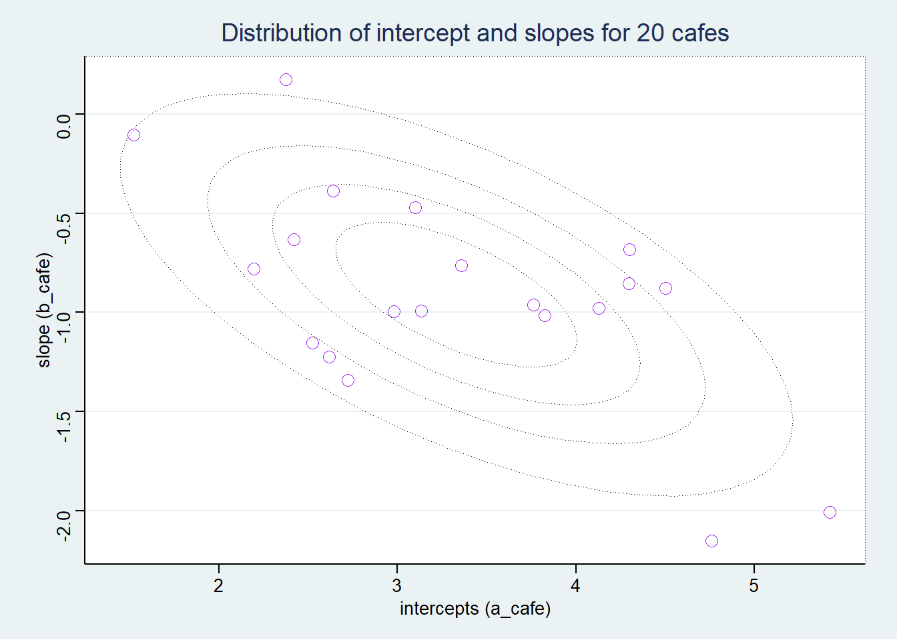
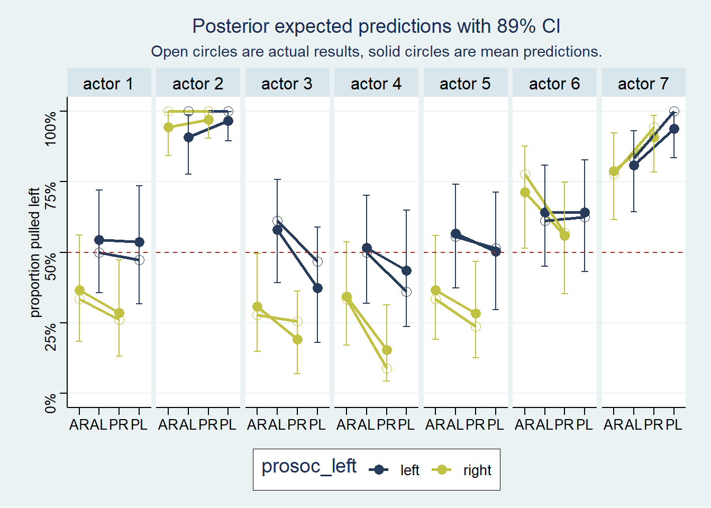

# For execution on a local, multicore CPU with excess RAM
options(mc.cores = parallel::detectCores())
# To avoid recompilation of unchanged Stan programs
rstan_options(auto_write = TRUE)14 Adventures in Covariance
Some options to facilitate the computations
The default theme used by ggplot2
theme_set(ggthemes::theme_stata(base_size = 11, base_family = "sans",
scheme = "s2color"))14.1 Varying slopes by construction
14.1.1 Simulate the population
simCafes <- list()
simCafes <- within(simCafes, {
# a := average morning wait time
# b := average difference afternoon wait time
Mu <- c("a" = 3.5, "b" = -1)
# a := std dev of intercepts
# b := std dev of slopes
sigmas <- c("a" = 1, "b" = 0.5)
# correlation between intercepts and slopes
rho <- -0.7
cov_ab <- prod(sigmas) * rho
})McElreath mentions a difficulty using the matrix function. He misses the argument byrow which resolve this.
# use byrow = TRUE to solve McElrath's issue
matrix(1:4, nrow = 2, ncol = 2, byrow = TRUE) [,1] [,2]
[1,] 1 2
[2,] 3 4we get the covariance matrix sigma as follows
simCafes <- within(simCafes, {
# matrix of correlation
Rho <- matrix(c(1, rho, rho, 1), nrow = 2)
# covariance matrix
Sigma <- diag(sigmas) %*% Rho %*% diag(sigmas)
})and we simulate the bivariate normal distribution
simCafes <- within(simCafes, {
n_cafes <- 20
set.seed(1409)
vary_effects <- MASS::mvrnorm(n = n_cafes, mu = Mu, Sigma = Sigma) |>
as.data.frame() |>
mutate(cafe = seq_len(n_cafes)) |>
relocate(cafe)
})
# glimpse(simCafes$vary_effects)and we plot the simulated data which represents the intercept and slope
simCafes$vary_effects |>
ggplot(aes(x = a, y = b)) +
geom_point(shape = 1, size = 3, color = "purple") +
lapply(X = 1:5 / 5, FUN = function(x) {
stat_ellipse(type = "norm", level = x, linetype = "dotted", size = 0.25)}) +
theme(legend.position = "none") +
labs(title = sprintf("Distribution of intercept and slopes for %d cafes",
simCafes$n_cafes),
x = "intercepts (a_cafe)", y = "slope (b_cafe)")Warning: Using `size` aesthetic for lines was deprecated in ggplot2 3.4.0.
ℹ Please use `linewidth` instead.
14.1.2 Simulate the observations (visits by cafe)
Now using the simulated intercepts and slopes, we create the simulated visits to each cafe.
simCafes <- within(simCafes, {
n_visits <- 10 # nb of visits to each cafe by robot
sigma <- 0.5 # std dev within cafes
set.seed(1409)
data <- vary_effects |>
expand(nesting(cafe, a, b), visit = seq_len(n_visits)) |>
mutate(afternoon = rep(0:1, times = n()/2)) |>
mutate(mu = a + b * afternoon) |>
mutate(wait = rnorm(n = n(), mean = mu, sd = sigma))
})
# glimpse(simCafes$vary_effects)
# glimpse(simCafes$data)and plot the simulated observations.
simCafes$data |>
mutate(afternoon = if_else(afternoon == 0, "M", "A"),
day = rep(rep(1:5, each = 2), times = simCafes$n_cafes),
label = paste("cafe", simCafes$data$cafe)) |>
filter(cafe %in% c(1, 5)) |>
ggplot(aes(x = visit, y = wait, group = day)) +
geom_point(aes(color = afternoon), size = 2) +
geom_line(color = "green") +
scale_color_manual(values = c("M" = "royalblue", "A" = "hotpink")) +
theme(legend.position = "none") +
labs(title = "Varying slopes simulation") +
facet_wrap(~ label, ncol = 1)
14.1.3 The varying slopes model
14.1.3.1 The model
\[ \begin{align*} wait_i &\sim \mathcal{N}(\mu_i, \sigma) \\ \mu_i &= \alpha_{cafe[i]} + \beta_{cafe[i]} \cdot afternoon_i \\ \begin{bmatrix} \alpha_{cafe} \\ \beta_{cafe} \end{bmatrix} &\sim \mathcal{MVNormal}( \begin{bmatrix} \alpha \\ \beta \end{bmatrix} , \bf{\Sigma} ) \\ \bf{\Sigma} &= \begin{bmatrix} \sigma_{\alpha} & 0 \\ 0 & \sigma_{\beta} \end{bmatrix} \begin{bmatrix} 1 & \rho \\ \rho & 1 \end{bmatrix} \begin{bmatrix} \sigma_{\alpha} & 0 \\ 0 & \sigma_{\beta} \end{bmatrix} \\ \alpha &\sim \mathcal{N}(0, 10) \\ \beta &\sim \mathcal{N}(0, 10) \\ \sigma &\sim \mathcal{HalfCauchy}(0, 1) \\ \sigma_{\alpha} &\sim \mathcal{HalfCauchy}(0, 1) \\ \sigma_{\beta} &\sim \mathcal{HalfCauchy}(0, 1) \\ \rho &\sim \mathcal{LKJcorr}(K=2) \end{align*} \]
14.1.3.2 LKJ prior
We use the ggdist package to illustrate the LKJ distribution.
lkj_dist <- list()
lkj_dist <- within(lkj_dist, {
df <- crossing(K = 2:4, eta = 1:3, x = seq(from = -1, to = 1, by = 0.05)) |>
mutate(
id = K^eta,
label_K = paste0("K==", K),
label_eta = paste0("eta==", eta),
dens = ggdist::dlkjcorr_marginal(x = x, K = K, eta = eta)
)
p <- df |>
ggplot(aes(x = x, y = dens, color = id)) +
geom_line(size = 1) +
scale_y_continuous(breaks = c(0, 0.5, 1)) +
scale_color_paletteer_c("palr::sst_pal") +
theme(legend.position = "none") +
facet_grid(facets = label_eta ~ label_K, scales= "fixed", labeller = label_parsed) +
labs(title = "Lewandowski-Kurowicka-Joe Distribution",
x = "correlation", y = "density")
})Warning in !is_integerish(K) || K < 2: 'length(x) = 369 > 1' in coercion to
'logical(1)'# glimpse(lkj_dist$df)
lkj_dist$p
tictoc::tic(msg = sprintf("run time of %s, use the cache.", "60 secs."))
fit14_01 <- xfun::cache_rds({
out <- brm(
data = simCafes$data,
family = gaussian,
formula = wait ~ 1 + afternoon + (1 + afternoon | cafe),
prior = c(
prior(normal(5, 2), class = Intercept),
prior(normal(-1, 0.5), class = b),
prior(exponential(1), class = sd),
prior(exponential(1), class = sigma),
prior(lkj(2), class = cor)),
sample_prior = TRUE,
iter = 1000, warmup = 500, chains = 2,
cores = detectCores(), seed = 1423)
add_criterion(out, c("loo", "waic"))},
file = "ch14_fit14_01", rerun = FALSE)
tictoc::toc()run time of 60 secs., use the cache.: 0.16 sec elapsedpost14_01 <- list()
post14_01 <- within(post14_01, {
prior <- prior_draws(x = fit14_01)
post <- tidy_draws(model = fit14_01)
# dataframe of correlations to plot
corr = data.frame("value" = c(prior$cor_cafe, post$cor_cafe__Intercept__afternoon),
"id" = c(rep("prior", nrow(prior)), rep("post", nrow(post))))
coefs <- fit14_01 |>
spread_draws(b_Intercept, b_afternoon, r_cafe[cafe, term]) |>
pivot_wider(id_cols = c("b_Intercept", "b_afternoon", "cafe"),
names_from = "term", values_from = "r_cafe") |>
group_by(cafe) |>
summarize(b_Intercept = mean(b_Intercept), b_afternoon = mean(b_afternoon),
r_afternoon = mean(afternoon), r_Intercept = mean(Intercept)) |>
mutate(Intercept = b_Intercept + r_Intercept,
afternoon = b_afternoon + r_afternoon) |>
select(cafe, Intercept, afternoon) |>
identity()
all <- simCafes$vary_effects |>
rename("Intercept" = a, "afternoon" = b)
all <- bind_rows("real" = all, "post" = coefs, .id = "id")
})Warning: `gather_()` was deprecated in tidyr 1.2.0.
ℹ Please use `gather()` instead.
ℹ The deprecated feature was likely used in the tidybayes package.
Please report the issue at <https://github.com/mjskay/tidybayes/issues/new>.# glimpse(post14_01$post)
# glimpse(post14_01$coefs)
# glimpse(post14_01$all)plot14_01 <- list()
plot14_01 <- within(plot14_01, {
cor <- post14_01$corr |>
ggplot(aes(x = value, color = id, linetype = id)) +
geom_density(size = 1, adjust = 0.75) +
scale_color_manual(values = c("prior" = "black", "post" = "blue")) +
scale_linetype_manual(values = c("prior" = "longdash", "post" = "solid")) +
theme(legend.position = c(0.8, 0.8), legend.title = element_blank()) +
labs(title = "Posterior and Prior distribution of the correlation",
x = "correlation")
})
plot14_01$cor
pred14_01 <- list()
pred14_01 <- within(pred14_01, {
pred_df <- simCafes$data |>
group_by(cafe, afternoon) |>
summarise(mwait = mean(wait)) |>
add_predicted_draws(object = fit14_01) |>
mean_qi(.width = 0.89) |>
mutate(term = if_else(afternoon == 0, "Intercept", "afternoon"))
real <- pred_df |>
select(cafe, term, mwait) |>
pivot_wider(id_cols = cafe, names_from = term, values_from = mwait)
pred <- pred_df |>
select(cafe, term, .prediction) |>
pivot_wider(id_cols = cafe, names_from = term, values_from = .prediction)
all <- bind_rows("real" = real, "pred" = pred, .id = "id")
})`summarise()` has grouped output by 'cafe'. You can override using the
`.groups` argument.# glimpse(pred14_01$all)
# glimpse(simCafes$data)plot14_01 <- within(plot14_01, {
coefs <- post14_01$all |>
ggplot(mapping = aes(x = Intercept, y = afternoon, group = cafe, color = id)) +
lapply(X = 1:5 / 5, FUN = function(x) {
stat_ellipse(data = post14_01$all, mapping = aes(x = Intercept, y = afternoon),
inherit.aes = FALSE,
geom = "polygon", type = "norm", level = x, linewidth = 1/5,
color = "dodgerblue", fill = "transparent")}) +
geom_point() +
geom_line(color = "black") +
scale_color_paletteer_d("awtools::spalette", direction = 1) +
theme(legend.position = c(0.2, 0.2),
legend.title = element_blank()) +
labs(title = "Coefficients and shrinkage",
x = "Intercept", y = "Slope")
wait <- pred14_01$all |>
ggplot(mapping = aes(x = Intercept, y = afternoon, group = cafe, color = id)) +
lapply(X = 1:5 / 5, FUN = function(x) {
stat_ellipse(data = pred14_01$all, mapping = aes(x = Intercept, y = afternoon),
inherit.aes = FALSE,
geom = "polygon", type = "norm", level = x, linewidth = 1/5,
color = "dodgerblue", fill = "transparent")}) +
geom_point() +
geom_line(color = "black") +
scale_color_paletteer_d("awtools::spalette", direction = -1) +
theme(legend.position = c(0.8, 0.2),
legend.title = element_blank()) +
labs(title = "Waiting time and shrinkage",
x = "morning wait", y = "afternoon wait")
})
# plot14_01$coefs
wrap_plots(plot14_01[c("coefs", "wait")]) +
plot_annotation(title = "Shrinkage in two dimensions")
14.2 Advanced varying slopes
data(chimpanzees)
dataChimp <- chimpanzees |>
mutate(block = factor(block),
actor = factor(actor),
treatment = factor(1 + prosoc_left + 2 * condition, levels = 1:4,
labels = c("AR", "AL", "PR", "PL")))
rm(chimpanzees)
dataChimp |>
skim() |>
mutate(across(.cols = where(is.numeric), .fns = round, digits = 2))| Name | dataChimp |
| Number of rows | 504 |
| Number of columns | 9 |
| _______________________ | |
| Column type frequency: | |
| factor | 3 |
| numeric | 6 |
| ________________________ | |
| Group variables | None |
Variable type: factor
| skim_variable | n_missing | complete_rate | ordered | n_unique | top_counts |
|---|---|---|---|---|---|
| actor | 0 | 1 | FALSE | 7 | 1: 72, 2: 72, 3: 72, 4: 72 |
| block | 0 | 1 | FALSE | 6 | 1: 84, 2: 84, 3: 84, 4: 84 |
| treatment | 0 | 1 | FALSE | 4 | AR: 126, AL: 126, PR: 126, PL: 126 |
Variable type: numeric
| skim_variable | n_missing | complete_rate | mean | sd | p0 | p25 | p50 | p75 | p100 | hist |
|---|---|---|---|---|---|---|---|---|---|---|
| recipient | 252 | 0.5 | 5.00 | 2.00 | 2 | 3.00 | 5.0 | 7.00 | 8 | ▇▃▃▃▇ |
| condition | 0 | 1.0 | 0.50 | 0.50 | 0 | 0.00 | 0.5 | 1.00 | 1 | ▇▁▁▁▇ |
| trial | 0 | 1.0 | 36.50 | 20.80 | 1 | 18.75 | 36.5 | 54.25 | 72 | ▇▇▇▇▇ |
| prosoc_left | 0 | 1.0 | 0.50 | 0.50 | 0 | 0.00 | 0.5 | 1.00 | 1 | ▇▁▁▁▇ |
| chose_prosoc | 0 | 1.0 | 0.57 | 0.50 | 0 | 0.00 | 1.0 | 1.00 | 1 | ▆▁▁▁▇ |
| pulled_left | 0 | 1.0 | 0.58 | 0.49 | 0 | 0.00 | 1.0 | 1.00 | 1 | ▆▁▁▁▇ |
14.2.0.1 The model
$$ \[\begin{align*} L_i &\sim \mathcal{Binomial}(1, p_i) \\ logit(p_i) &\sim \gamma_{treatment[i]} + \alpha_{actor[i], treatment[i]} + \beta_{block[i], treatment[i]} \\ \gamma_{treatment[i]} &\sim \mathcal{N}(0, 1), \, \text{for } i = 1 \ldots 4 \\ \begin{bmatrix} \alpha_{j, 1} \\ \alpha_{j, 2} \\ \alpha_{j, 3} \\ \alpha_{j, 4} \end{bmatrix} &\sim \mathcal{MVNormal}( \begin{bmatrix} 0 \\ 0 \\ 0 \\ 0\\ \end{bmatrix} , \bf{\Sigma_{actor}} ) \\ \begin{bmatrix} \beta_{j, 1} \\ \beta_{j, 2} \\ \beta_{j, 3} \\ \beta_{j, 4} \end{bmatrix} &\sim \mathcal{MVNormal}( \begin{bmatrix} 0 \\ 0 \\ 0 \\ 0 \\ \end{bmatrix} , \bf{\Sigma_{block}} ) \\ \bf{\Sigma_{actor}} &= \begin{bmatrix} \sigma_{factor} & 0 \\ 0 & \sigma_{factor} \end{bmatrix} \cdot \begin{bmatrix} 1 & \rho_{factor} \\ \rho_{factor} & 1 \end{bmatrix} \cdot \begin{bmatrix} \sigma_{factor} & 0 \\ 0 & \sigma_{factor}\\ \end{bmatrix} \\ \bf{\Sigma_{block}} &= \begin{bmatrix} \sigma_{block} & 0 \\ 0 & \sigma_{block} \end{bmatrix} \cdot \begin{bmatrix} 1 & \rho_{block} \\ \rho_{block} & 1 \end{bmatrix} \cdot \begin{bmatrix} \sigma_{block} & 0 \\ 0 & \sigma_{block}\\ \end{bmatrix} \\ \sigma_{actor, j} &\sim \mathcal{Exponential}(1), \, \text{for } i = 1 \ldots 4 \\ \sigma_{block, j} &\sim \mathcal{Exponential}(1), \, \text{for } i = 1 \ldots 4 \\ \rho_{actor}, \rho_{block} &\sim \mathcal{LKJcorr}(2) \end{align*}\] $$
We don’t do model m14.2 since it is only done to illustrate centralized vs non-centralized parametrization and that brms uses only non-centralized parametrization.
tictoc::tic(msg = sprintf("run time of %s, use the cache.", "80 secs."))
fit14_03 <- xfun::cache_rds({
out <- brm(
data = dataChimp,
family = bernoulli,
formula = bf(pulled_left ~ 0 + treatment + (0 + treatment | actor) + (0 + treatment | block)),
prior = c(
prior(normal(0, 1), class = b),
prior(exponential(1), class = sd, group = actor),
prior(exponential(1), class = sd, group = block),
prior(lkj(2), class = cor, group = actor),
prior(lkj(2), class = cor, group = block)),
iter = 1000, warmup = 500, chains = 2,
cores = detectCores(), seed = 1427)
add_criterion(out, c("loo", "waic"))},
file = "ch14_fit14_03", rerun = FALSE)
tictoc::toc()run time of 80 secs., use the cache.: 0.14 sec elapsedThe plot is slightly different than what McElreath has. The open circle represent the actual results and the solid circles are the predicted mean.
plot14_03 <- list()
plot14_03 <- within(plot14_03, {
df <- dataPredicted <- dataChimp |>
group_by(actor, treatment, block) |>
summarize(prop = mean(pulled_left)) |>
ungroup() |>
add_epred_draws(fit14_03) |>
summarize(prop = mean(prop),
mean_qi(.epred, .width = 0.89) ) |>
rename(".epred" = y, ".lower" = ymin, ".upper" = ymax)
# every block is different but, for plotting, we use the average of the blocks
df <- df |>
group_by(actor, treatment) |>
summarize(
prop = mean(prop),
.epred = mean(.epred),
.lower = mean(.lower),
.upper = mean(.upper)) |>
mutate(label = paste("actor", actor)) |>
mutate(condition = if_else(substring(treatment, 1, 1) == "A", "alone", "partner"),
condition = as.factor(condition),
prosoc_left = if_else(substring(treatment, 2, 2) == "R", "right", "left"),
prosoc_left = as.factor(prosoc_left)) |>
mutate(label = paste("actor", actor))
p <- df |>
ggplot(aes(x = treatment, y = .epred,
group = prosoc_left, color = prosoc_left,
fill = prosoc_left)) +
geom_line(linetype = "solid", size = 1) +
geom_point(shape = 16, size = 3) +
geom_line(aes(y = prop), linetype = "solid", size = 1) +
geom_point(aes(y = prop), shape = 1, size = 3) +
geom_errorbar(aes(ymin = .lower, ymax = .upper), width = 1/3) +
geom_hline(yintercept = 0.5, color = "brown", linetype = 2) +
scale_y_continuous(labels = scales::label_percent()) +
scale_color_paletteer_d("jcolors::pal9") +
coord_cartesian(ylim = c(0, 1)) +
theme(legend.position = "bottom") +
labs(title = "Posterior expected predictions with 89% CI",
subtitle = "Open circles are actual results, solid circles are mean predictions.",
x = NULL, y = "proportion pulled left") +
facet_grid(. ~ label)
})`summarise()` has grouped output by 'actor', 'treatment'. You can override
using the `.groups` argument.
`summarise()` has grouped output by 'actor', 'treatment', 'block', 'prop'. You
can override using the `.groups` argument.
`summarise()` has grouped output by 'actor'. You can override using the
`.groups` argument.# glimpse(plot14_03$df)
plot14_03$p
14.3 Instruments and Causal designs
ggdag::dagify(E ~ U, W ~ U, W ~ E) |>
ggdag::ggdag_classic(layout = "sugiyama", text_col = "royalblue") +
ggdag::theme_dag_blank(
panel.background = element_rect(fill = "snow", color = "snow"))
In causal terms, an instrument variable is a variable that acts like a natural experiment on the exposure \(E\).
In mathematical terms the instrumental variable \(Q\) is characterized as follows:
- Independent of \(U\), i.e. \(Q \perp\!\!\!\perp U\)
- Not independent of \(E\), i.e. \(Q \not\!\perp\!\!\!\perp E\)
- Has no effect on \(W\) except through \(E\), also called the exclusion condition
The exclusion restriction cannot be tested, and it is often implausible.
In the education and wage example, the simplest instrument variable \(Q\) would be as follows
ggdag::dagify(E ~ U + Q, W ~ U, W ~ E) |>
ggdag::ggdag_classic(layout = "sugiyama", text_col = "royalblue") +
ggdag::theme_dag_blank(
panel.background = element_rect(fill = "snow", color = "snow"))
We now use a simulation to illustrate.
With real data, you never know what the right anser is. This is h=why studying simulated examples is so important.
simInstrument <- list()
simInstrument <- within(simInstrument, {
n = 500L
U <- rnorm(n = n)
Q <- sample(x = 1:4, size = n, replace = TRUE)
E <- rnorm(n = n, mean = U + Q)
# we assume that the true influence of E (education)
# on W (wage) is zero. Just for the sake of the example.
W <- rnorm(n = n, mean = U + 0 * E)
df <- data.frame(
"W" = scale(W),
"E" = scale(E),
"Q" = scale(Q)
)
})
# glimpse(simInstrument$df)tictoc::tic(msg = sprintf("run time of %s, use the cache.", "60 secs."))
fit14_04 <- xfun::cache_rds({
out <- brm(
data = simInstrument$df,
family = gaussian,
formula = W ~ 1 + E,
prior = c(
prior(normal(0, 0.2), class = Intercept),
prior(normal(0, 0.5), class = b),
prior(exponential(1), class = sigma)),
iter = 1000, warmup = 500, chains = 2,
cores = detectCores(), seed = 1429)
add_criterion(out, c("loo", "waic"))},
file = "ch14_fit14_04", rerun = FALSE)
tictoc::toc()run time of 60 secs., use the cache.: 0.17 sec elapsedwhich gives us the results
summarize_draws(fit14_04, "mean", "sd", ~quantile(.x, probs = c(0.055, 0.945)),
default_convergence_measures()) |>
filter(!grepl("^lp", x = variable)) |>
mutate(across(.cols = where(is.numeric), .fns = round, digits = 2),
across(.cols = starts_with("ess"), .fns = as.integer))# A tibble: 3 × 8
variable mean sd `5.5%` `94.5%` rhat ess_bulk ess_tail
<chr> <dbl> <dbl> <dbl> <dbl> <dbl> <int> <int>
1 b_Intercept 0 0.04 -0.06 0.06 1 1103 636
2 b_E 0.4 0.04 0.34 0.46 1 970 696
3 sigma 0.92 0.03 0.87 0.96 1 1172 843The value \(b_E\) should have been close to zero. The oncorrect value is caused by the confounding effect of \(U\).
Now, lets see what happens when we include the instrumental variable \(Q\).
tictoc::tic(msg = sprintf("run time of %s, use the cache.", "60 secs."))
fit14_05 <- xfun::cache_rds({
out <- brm(
data = simInstrument$df,
family = gaussian,
formula = W ~ 1 + E + Q,
prior = c(
prior(normal(0, 0.2), class = Intercept),
prior(normal(0, 0.5), class = b),
prior(exponential(1), class = sigma)),
iter = 1000, warmup = 500, chains = 2,
cores = detectCores(), seed = 1429)
add_criterion(out, c("loo", "waic"))},
file = "ch14_fit14_05", rerun = FALSE)
tictoc::toc()run time of 60 secs., use the cache.: 0.22 sec elapsedwhich gives us the results
summarize_draws(fit14_05, "mean", "sd", ~quantile(.x, probs = c(0.055, 0.945)),
default_convergence_measures()) |>
filter(!grepl("^lp", x = variable)) |>
mutate(across(.cols = where(is.numeric), .fns = round, digits = 2),
across(.cols = starts_with("ess"), .fns = as.integer))# A tibble: 4 × 8
variable mean sd `5.5%` `94.5%` rhat ess_bulk ess_tail
<chr> <dbl> <dbl> <dbl> <dbl> <dbl> <int> <int>
1 b_Intercept 0 0.04 -0.06 0.06 1 896 646
2 b_E 0.6 0.05 0.52 0.68 1.01 941 577
3 b_Q -0.35 0.05 -0.43 -0.27 1 843 650
4 sigma 0.87 0.03 0.83 0.92 1 872 737The results are now even more confusing as the influence of \(Q\) makes the effect of \(E\) difficult to evaluate on its own.
So lets use the instrumental variable \(Q\) again but taking into account the covariance of \(E\) and \(Q\). That is, we express the model as a *multivariate statistical model as follows
\[ \begin{align*} \begin{bmatrix} W_i \\ E_i \\ \end{bmatrix} &\sim \mathcal{MVNormal}( \begin{bmatrix} \mu_{W, i} \\ \mu_{E, i} \end{bmatrix}, \bf{\Sigma} ) \\ \mu_{W, i} &= \alpha_W + \beta_{EW}E_i \\ \mu_{E, i} &= \alpha_E + \beta_{QE}Q_i \\ \bf{\Sigma} &= \begin{bmatrix} \sigma_W & 0 \\ 0 & \sigma_E \end{bmatrix} \cdot \begin{bmatrix} 1 & \rho \\ \rho & 1 \end{bmatrix} \cdot \begin{bmatrix} \sigma_W & 0 \\ 0 & \sigma_E \end{bmatrix} \\ \alpha_W, \alpha_E &\sim \mathcal{N}(0, 0.2) \\ \beta_{EW}, \beta_{QE} &\sim \mathcal{N}(0, 0.5) \\ \sigma_W, \sigma_E &\sim \mathcal{Exponential}(1) \\ \rho &\sim \mathcal{LKJ}(2) \end{align*} \]
and the final fit is
tictoc::tic(msg = sprintf("run time of %s, use the cache.", "90 secs."))
fit14_06 <- xfun::cache_rds({
out <- brm(
data = simInstrument$df,
family = gaussian,
formula = bf(W ~ 1 + E) + bf(E ~ 1 + Q),
prior = c(
prior(normal(0, 0.2), class = Intercept, resp = E),
prior(normal(0, 0.5), class = b, resp = E),
prior(exponential(1), class = sigma, resp = E),
prior(normal(0, 0.2), class = Intercept, resp = W),
prior(normal(0, 0.5), class = b, resp = W),
prior(exponential(1), class = sigma, resp = W),
prior(lkj(2), class = rescor)),
iter = 1000, warmup = 500, chains = 2,
cores = detectCores(), seed = 1429)
add_criterion(out, c("loo", "waic"))},
file = "ch14_fit14_06", rerun = FALSE)
tictoc::toc()run time of 90 secs., use the cache.: 0.18 sec elapsedwhich gives us the results
summarize_draws(fit14_06, "mean", "sd", ~quantile(.x, probs = c(0.055, 0.945)),
default_convergence_measures()) |>
filter(!grepl("^lp", x = variable)) |>
mutate(across(.cols = where(is.numeric), .fns = round, digits = 2),
across(.cols = starts_with("ess"), .fns = as.integer))# A tibble: 7 × 8
variable mean sd `5.5%` `94.5%` rhat ess_bulk ess_tail
<chr> <dbl> <dbl> <dbl> <dbl> <dbl> <int> <int>
1 b_W_Intercept 0 0.04 -0.07 0.07 1 899 640
2 b_E_Intercept 0 0.04 -0.06 0.06 1 823 701
3 b_W_E 0 0.08 -0.13 0.13 1.01 452 738
4 b_E_Q 0.58 0.04 0.52 0.64 1 752 727
5 sigma_W 1 0.04 0.93 1.07 1.01 513 738
6 sigma_E 0.82 0.02 0.78 0.86 1 895 662
7 rescor__W__E 0.49 0.06 0.39 0.58 1.01 444 731
14.4 Social relations as correlated varying effects
14.4.1 Data
The research can be find in this paper. However I could not find what the variable \(dlndist\) is. I suppose it it the log of some distance . . but why is it negative? It doesn’t matter, it is only used to color the edges of the network and not in the analysis per se.
The data set can be summarized with the
skimrpackageVariable type: factor
Variable type: numeric
We can visualize the distribution of dyadic gifts using a scatter plot
and since this a social network then we can visualize the network with the
ggnetworkpackage.For details see ggnetwork.First we need to create an igraph object. See igraph for details.
14.4.2 Model
$$ \[\begin{align*} \begin{bmatrix} y_{a \rightarrow b} \\ y_{b \rightarrow a} \\ \end{bmatrix} &\sim \begin{bmatrix} \mathcal{Poisson}(\lambda_{AB}) \\ \mathcal{Poisson}(\lambda_{BA}) \\ \end{bmatrix} \\ \log{\lambda_{AB}} &= \alpha + g_A + r_B + d_{AB} \\ \log{\lambda_{BA}} &= \alpha + g_B + r_A + d_{BA} \\ \begin{bmatrix} g_i \\ r_i \\ \end{bmatrix} &\sim \mathcal{MVNormal}( \begin{bmatrix} 0 \\ 0 \end{bmatrix}, \Sigma_{gr} ) \\ \begin{bmatrix} d_{ij} \\ d_{ji} \\ \end{bmatrix} &\sim \mathcal{MVNormal}( \begin{bmatrix} 0 \\ 0 \end{bmatrix}, \Sigma_d ) \\ \Sigma_{gr} &= \begin{bmatrix} \sigma_g & 0 \\ 0 & \sigma_r & \end{bmatrix} \cdot \begin{bmatrix} 1 & \rho_{gr} \\ \rho_{gr} & 1 \\ \end{bmatrix} \cdot \begin{bmatrix} \sigma_g & 0 \\ 0 & \sigma_r \\ \end{bmatrix} \\ \Sigma_d &= \begin{bmatrix} \sigma_d & 0 \\ 0 & \sigma_d & \end{bmatrix} \cdot \begin{bmatrix} 1 & \rho_d \\ \rho_d & 1 \\ \end{bmatrix} \cdot \begin{bmatrix} \sigma_d & 0 \\ 0 & \sigma_d \\ \end{bmatrix} \\ \sigma_d, \sigma_g, \sigma_r &\sim \mathcal{Exponential}(1) \\ \rho_{gr}, \rho_d &\sim \mathcal{LKJ}(4) \end{align*}\] $$
Kurtz says that there is no known way to use
brms. The packagebisonRthat specializes in social networks and usesbrms. It can be found at bison with a useful vignette at vignette.This section is skipped. But one day, it might be interesting to do it with the
bisonRpackage.